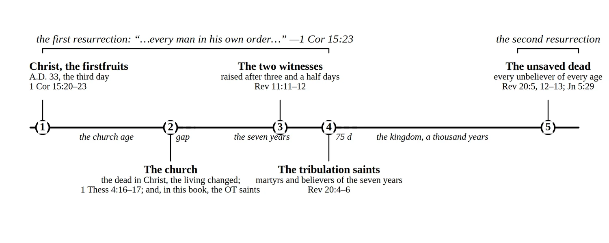

Appendix C of A Prelude to the End of the World, by Brandon Wallis
Tables for Reference
Print this (PDF) More free resources
Three sets of tables gather in one place what the chapters treat in sequence: the judgments, the resurrections, and the views this book weighs. Each row points to the chapter where the matter is argued from the text.
The Judgments
| Judgment | When | Who is judged | Basis | Outcome | Scripture; Chapter |
|---|---|---|---|---|---|
| The judgment seat of Christ (the bema) | In heaven, after the rapture, before the marriage of the Lamb | Believers of the church age (and, in this book, the Old Testament saints raised with them) | Works done after salvation, tested by fire; not salvation itself | Reward given or withheld; the believer is saved regardless | 2 Cor 5:10; 1 Cor 3:11–15; Rom 14:10; Ch. 3, 8 |
| The judgment of Israel | At the return, in the seventy-five days before the kingdom | Jews who survive the tribulation in natural bodies | Faith in the Messiah they have now seen | Believers enter the land and the kingdom; rebels are purged and do not enter | Ezek 20:33–38; Zech 12:10; Ch. 17 |
| The judgment of the nations (sheep and goats) | At the return, in the seventy-five days before the kingdom | Gentiles who survive the tribulation in natural bodies | Treatment of the King’s brethren during the tribulation, as the evidence of faith | Sheep enter the kingdom in mortal bodies; goats go into everlasting punishment | Matt 25:31–46; Joel 3:2; Ch. 17 |
| The great white throne | After the thousand years and the final rebellion | The unsaved dead of all ages, raised for judgment | The books of works, and the book of life in which their names are not found | The second death: the lake of fire, forever | Rev 20:11–15; Ch. 19, 20 |
The Resurrections
“But every man in his own order: Christ the firstfruits; afterward they that are Christ’s at his coming” —1 Cor 15:23. The first resurrection is one harvest gathered in stages; the second is a single event a thousand years later (see Figure 7, below).
| Stage | When | Who is raised | Scripture; Chapter |
|---|---|---|---|
| Christ, the firstfruits | A.D. 33, the third day | Christ alone, with the saints of Matthew 27:52–53 as a sign | 1 Cor 15:20–23; Matt 27:52–53; Ch. 1 |
| The church at the rapture | Before the tribulation, at an hour no one knows | The dead in Christ, then the living changed; in this book, the Old Testament saints with them | 1 Thess 4:16–17; 1 Cor 15:51–52; Dan 12:2; Ch. 3 |
| The two witnesses | Three and a half days after their death, in the second half of the tribulation | The two witnesses | Rev 11:11–12; Ch. 10 |
| The tribulation saints | At the return, before the kingdom | Those martyred under the beast, and the rest of the tribulation dead who believed | Rev 20:4–6; Ch. 15, 17 |
| The unsaved dead | After the thousand years | Every unbeliever of every age, for the great white throne | Rev 20:5, 12–13; Jn 5:29; Dan 12:2; Ch. 19 |

Views of the Rapture
| View | What it holds | Where this book answers it |
|---|---|---|
| Pretribulational (this book) | The church is caught up before Daniel’s seventieth week begins; imminent, with no sign required | Chapter 3, “The Case in Full: Ten Lines of Evidence” |
| Midtribulational | The church is caught up at the midpoint, before the great tribulation, often at the seventh trumpet | Chapter 3, “The Other Views of the Rapture” |
| Pre-wrath | The church endures the first part of the tribulation and is removed before the bowls, when God’s wrath proper begins | Chapter 3, “The Other Views of the Rapture”; Chapter 8 on the seals as the Lamb’s wrath |
| Posttribulational | The church is caught up at the return and comes straight back down with Christ; one event, not two | Chapter 3, “The Rapture and the Second Coming Side by Side”; Chapter 15 |
| Partial rapture | Only watchful or faithful believers are taken; the rest go through the tribulation | Chapter 3; Chapter 22 on salvation as a gift, not a reward |
Views of the Millennium
| View | What it holds | Where this book answers it |
|---|---|---|
| Premillennial (this book) | Christ returns bodily before a literal thousand-year reign on this earth, with Israel restored | Chapter 17; Chapter 15 |
| Amillennial | There is no future earthly kingdom; the thousand years are the present church age, Satan bound at the cross, the promises to Israel fulfilled in the church | Chapter 17, “The Other Views”; Chapter 2 on Israel; Appendix B |
| Postmillennial | The gospel gradually Christianizes the world, producing a golden age, after which Christ returns | Chapter 17, “The Other Views”; Chapter 5 on the last days as days of apostasy, not progress |
The Seven Blessings of Revelation
Seven times Revelation pronounces a blessing. Read together they are the book’s own summary of what it asks of its reader: read it, keep it, watch, die in the Lord if it comes to that, and come to the supper.
| Text | The blessing | What it asks | |
|---|---|---|---|
| 1 | Rev 1:3 | “Blessed is he that readeth, and they that hear the words of this prophecy, and keep those things which are written therein…” | Read and keep it |
| 2 | Rev 14:13 | “…Blessed are the dead which die in the Lord from henceforth…” | Die in the Lord |
| 3 | Rev 16:15 | “…Blessed is he that watcheth, and keepeth his garments…” | Watch |
| 4 | Rev 19:9 | “…Blessed are they which are called unto the marriage supper of the Lamb…” | Come to the supper |
| 5 | Rev 20:6 | “Blessed and holy is he that hath part in the first resurrection…” | Share the first resurrection |
| 6 | Rev 22:7 | “…blessed is he that keepeth the sayings of the prophecy of this book” | Keep the sayings |
| 7 | Rev 22:14 | “Blessed are they that do his commandments, that they may have right to the tree of life…” | Do His commandments |
Schools of Interpretation
| School | What it holds | Where this book answers it |
|---|---|---|
| Futurist (this book) | Revelation 4–22 describes events still future, to be read as literally as the rest of Scripture | Prologue, “How This Book Reads Scripture”; Appendix B |
| Preterist | Most or all of Revelation was fulfilled in the first century, chiefly in A.D. 70 | Appendix B, “When Revelation Was Written”; Chapter 17 |
| Historicist | Revelation charts the whole course of church history from John’s day to the end | Appendix B; the failed date-setting of Chapter 5 |
| Idealist | Revelation is a timeless picture of the conflict between good and evil, not a sequence of events | Prologue; Appendix B |
This is from the back of A Prelude to the End of the World. Notes like (Chapter 13) point to chapters of the book. More free resources · About the book